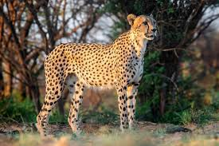
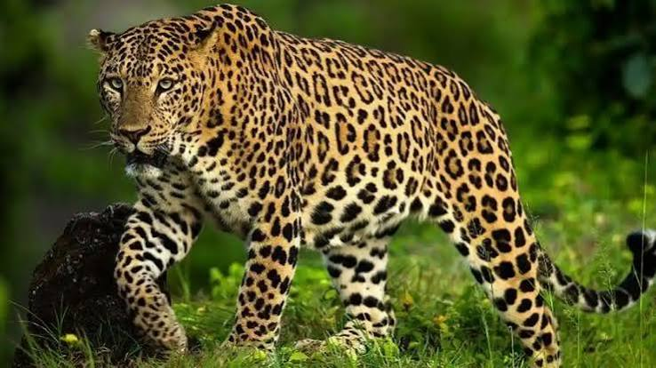
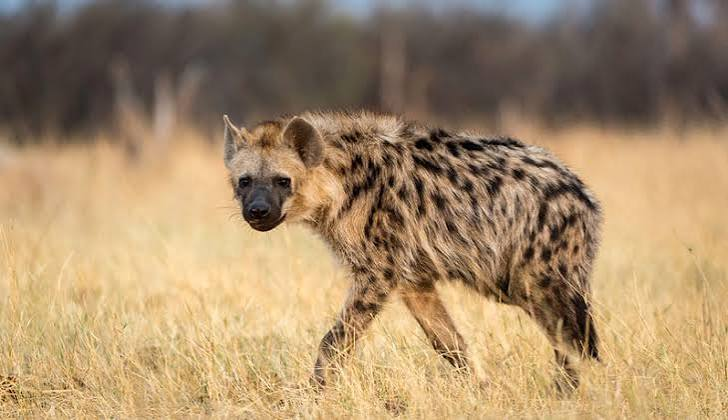

GALERI EDUKASI
Contoh Hewan Karnivora
Berikut beberapa hewan yang termasuk kelompok karnivora.

Singa
Memakan zebra, rusa, kerbau, dan hewan lainnya.

Harimau
Berburu rusa, babi hutan, dan berbagai mamalia lainnya.

Serigala
Memakan rusa, kelinci, dan hewan kecil lainnya.

Cheetah
Berburu antelop dan hewan berukuran kecil hingga sedang.

Macan Tutul
Memakan rusa, monyet, dan berbagai hewan lainnya.

Hyena
Berburu hewan lain dan juga memakan bangkai.

Buaya
Memakan ikan, burung, dan berbagai hewan lainnya.

Elang
Berburu ikan, tikus, ular, dan hewan kecil lainnya.